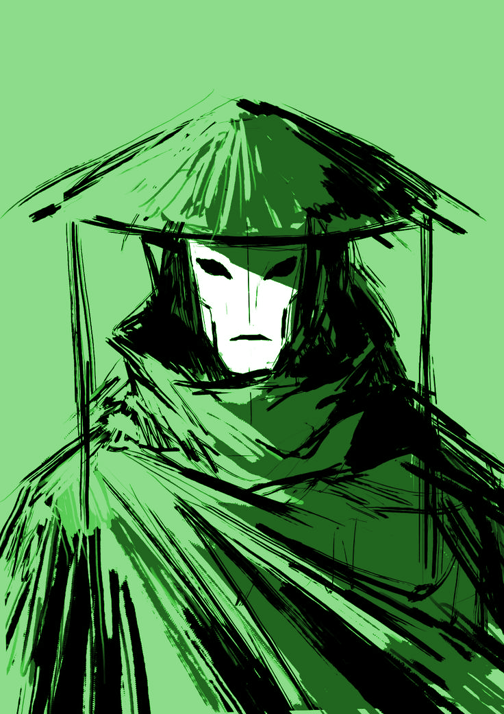

Mikikoko
Summary:
Mikikoko is the Vizier of murder, cruelty, and violence. She is a knife in a dark alley, poison on the lips of a noble, and fire raging through a city center. A true artist in her craft, she seeks out new and creative ways to inflict suffering on the world, caring little for the rising tide of blood spilled in her name. Though she is not known to seek power or influence, the people of the world still fear her - no one wants to become her next masterpiece.
Not much is known about the exact nature of the philosophy Mikikoko wrote into the eldritch plane. Though some believe her to be a simple psychopath, this does not line up with historical accounts of her, which paint her as an understated yet effective soldier in the ancient Akkaidan army. Her turn toward sadism only came after an infamous battle at the red river crossing - a battle in which she was the only survivor on either side. Perhaps she believes in the inevitability of violence. Perhaps she believes in the embrace of it. Whatever the case, she is incredibly dangerous, and feared even by those who harness her power.
Powers:
- Swordsmanship, dueling, pistols, axes - basically any kind of weapon a single person can wield.
- Poison, wounding, and blood magic - causing pain is her specialty.
- Regeneration (of your own health, anyway).
Weaknesses:
- Her magic doesn't allow you to heal or help others in any capacity.
- Subtle debuffs and nonviolent magic also aren't an option.
- In general, her powers will make you great at killing - and bad at everything else.
Followers:
- Her creations are known as Kren'mi, and are green, reptillian creatures with a strong healing factor.
- They can be found in swamps, bogs, and other out-of-the-way areas, usually in small numbers.
- Some mortals bargain with her for power, seeking the magic of murder for its obvious uses.
- None of her followers trust her, though. She has no interest in starting a cult or gaining political power, and thus has none.
Misconceptions:
- Her magic is only decent for stealth, not great at it. Sure, she'll help hide you if it gets you to stab more people, but she doesn't really care about getting caught.
- Some people associate her with disease, but she has no power over it. It just tends to be a byproduct of the number of corpses she leaves behind.